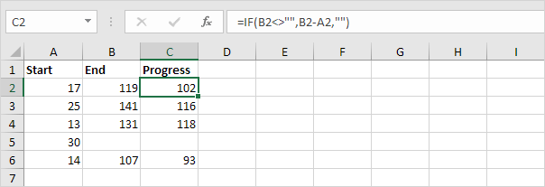

Fungsi IF adalah salah satu fungsi yang paling banyak digunakan di Excel. Halaman ini berisi banyak contoh IF yang mudah diikuti.
 unduh file file if dan coba masukkan fungsi-fungsi ini.
unduh file file if dan coba masukkan fungsi-fungsi ini.
Contoh IF Sederhana
Fungsi IF memeriksa apakah suatu kondisi terpenuhi, dan mengembalikan satu nilai jika benar dan nilai lain jika salah.
1a. Misalnya, lihat fungsi IF di sel B2 di bawah ini.

Penjelasan: jika harga lebih besar dari 500, fungsi IF mengembalikan High, jika tidak mengembalikan Low.
1b. Fungsi IF berikut menghasilkan hasil yang sama persis.

Catatan: Anda dapat menggunakan operator perbandingan berikut : = (sama dengan), > (lebih besar dari), < (kurang dari), >= (lebih besar atau sama dengan), <= (kurang dari atau sama dengan) dan <> (tidak sebanding dengan).
2. Selalu sertakan teks dalam tanda kutip ganda.

3a. Rumus di bawah ini menghitung kemajuan antara dua titik waktu.

3b. Anda dapat menggunakan fungsi IF untuk menampilkan string kosong jika nilai akhir belum dimasukkan (lihat baris 5).

Penjelasan: jika nilai akhir tidak kosong (<> berarti tidak sama dengan), fungsi IF menghitung kemajuan antara nilai awal dan akhir, selain itu akan menampilkan string kosong (dua tanda kutip ganda tanpa apa pun di antaranya).
Dan/Atau Kriteria
Gunakan fungsi IF dalam kombinasi dengan fungsi AND dan fungsi OR dan jadilah ahli Excel.
1. Sebagai contoh, perhatikan fungsi IF pada sel D2 di bawah ini.

Penjelasan: fungsi AND mengembalikan TRUE jika skor pertama lebih besar atau sama dengan 60 dan skor kedua lebih besar atau sama dengan 90, selain itu mengembalikan FALSE. Jika TRUE, fungsi IF mengembalikan Pass, jika FALSE, fungsi IF mengembalikan Fail.
2. Sebagai contoh, perhatikan fungsi IF pada sel D2 di bawah ini.

Penjelasan: fungsi OR mengembalikan TRUE jika setidaknya satu skor lebih besar dari atau sama dengan 60, selain itu mengembalikan FALSE. Jika TRUE, fungsi IF mengembalikan Pass, jika FALSE, fungsi IF mengembalikan Fail.
3. Sebagai contoh, perhatikan fungsi IF pada sel D2 di bawah ini.

Penjelasan: fungsi AND di atas memiliki dua argumen yang dipisahkan oleh koma (Tabel, Hijau atau Biru). Fungsi AND mengembalikan TRUE jika Produk sama dengan "Tabel" dan Warna sama dengan "Hijau" atau "Biru". Jika TRUE, fungsi IF mengurangi harga sebesar 50%, jika FALSE, fungsi IF mengurangi harga sebesar 10%.
IF Bersarang
Fungsi IF di Excel bisa disarangkan, saat Anda memiliki beberapa kondisi yang harus dipenuhi. Nilai FALSE digantikan oleh fungsi IF lain untuk melakukan pengujian lebih lanjut.
1. Misalnya, lihat rumus IF bersarang di sel C2 di bawah ini.

Penjelasan: jika skor sama dengan 1, rumus IF bersarang menghasilkan Buruk, jika skor sama dengan 2, rumus IF bersarang menghasilkan Baik, jika skor sama dengan 3, rumus IF bersarang menghasilkan Sangat Baik, jika tidak maka mengembalikan Tidak Valid. Jika Anda memiliki Excel 2016 atau lebih baru, cukup gunakan fungsi IFS .
2. Misalnya, lihat rumus IF bersarang di sel C2 di bawah ini.

Penjelasan: jika skor kurang dari 60, rumus IF bersarang mengembalikan F, jika skor lebih besar atau sama dengan 60 dan kurang dari 70, rumus mengembalikan D, jika skor lebih besar atau sama dengan 70 dan kurang dari 80, rumus mengembalikan C, jika skor lebih besar atau sama dengan 80 dan kurang dari 90, rumus mengembalikan B, selain itu mengembalikan A.
Lebih lanjut mengenai IF
Fungsi IF adalah fungsi yang bagus. Mari kita lihat beberapa contoh keren lainnya.
1. Misalnya, gunakan IF dan AND untuk menguji apakah suatu nilai berada di antara dua angka.

Penjelasan: fungsi AND mengembalikan TRUE jika orang tersebut lebih tua dari 12 tahun dan lebih muda dari 20 tahun, selain itu mengembalikan FALSE. Jika TRUE, fungsi IF mengembalikan Ya, jika FALSE, fungsi IF mengembalikan Tidak.
2. Anda dapat menggabungkan IF dengan AVERAGE, SUM dan fungsi Excel lainnya. Langit adalah batasnya!

Penjelasan: fungsi AND mengembalikan TRUE jika nilai input lebih besar dari 100 dan rata-rata nilai dalam Nama Range Data1 lebih besar dari 100, selain itu mengembalikan FALSE. Jika TRUE, fungsi IF mengembalikan jumlah Data2, jika FALSE, fungsi IF mengembalikan 0.
Bingung? Anda selalu dapat menggunakan alat Evaluasi Rumus untuk menelusuri rumus IF Anda. Alat Excel ini membantu Anda memahami rumus.
3. Misalnya, pilih sel G3 di atas.
4. Pada tab Rumus, dalam grup Audit Rumus, klik Evaluasi Rumus.

5. Klik Evaluasi beberapa kali.

Catatan: coba sendiri. Unduh file Excel dan pilih salah satu rumus IF yang dijelaskan di halaman ini. Anda dapat menggunakan alat ini untuk menelusuri semua jenis rumus.
Gunakan operator perbandingan di Excel untuk memeriksa apakah dua nilai sama satu sama lain, jika satu nilai lebih besar dari nilai lain, jika satu nilai kurang dari nilai lain, dll.
Sama dengan
Operator sama dengan (=) mengembalikan TRUE jika dua nilai sama satu sama lain.
1. Misalnya, lihat rumus di sel C1 di bawah ini.

Penjelasan: rumus mengembalikan TRUE karena nilai di sel A1 sama dengan nilai di sel B1. Selalu awali rumus dengan tanda sama dengan (=).
2. Fungsi IF di bawah ini menggunakan operator sama dengan.

Penjelasan: jika dua nilai (angka atau string teks) sama satu sama lain, fungsi IF mengembalikan Ya, jika tidak mengembalikan Tidak.
Lebih besar dari
Operator lebih besar dari (>) mengembalikan TRUE jika nilai pertama lebih besar dari nilai kedua.
1. Misalnya, lihat rumus di sel C1 di bawah ini.

Penjelasan: rumus mengembalikan TRUE karena nilai di sel A1 lebih besar dari nilai di sel B1.
2. Fungsi OR di bawah ini menggunakan operator lebih besar dari.

Penjelasan: fungsi OR ini mengembalikan TRUE jika setidaknya satu nilai lebih besar dari 50, selain itu mengembalikan FALSE.
Kurang dari
Operator kurang dari (<) mengembalikan TRUE jika nilai pertama lebih kecil dari nilai kedua.
1. Misalnya, lihat rumus di sel C1 di bawah ini.
Penjelasan: rumus mengembalikan TRUE karena nilai di sel A1 lebih kecil dari nilai di sel B1.
2. Fungsi AND di bawah ini menggunakan operator kurang dari.

Penjelasan: fungsi AND ini mengembalikan TRUE jika kedua nilai kurang dari 80, selain itu mengembalikan FALSE.
Lebih dari atau sama dengan
Operator lebih besar dari atau sama dengan (>=) mengembalikan TRUE jika nilai pertama lebih besar dari atau sama dengan nilai kedua.
1. Misalnya, lihat rumus di sel C1 di bawah ini.

Penjelasan: rumus mengembalikan TRUE karena nilai di sel A1 lebih besar atau sama dengan nilai di sel B1.
2. Fungsi COUNTIF di bawah ini menggunakan operator yang lebih besar atau sama dengan.

Penjelasan: fungsi COUNTIF ini menghitung jumlah sel yang lebih besar atau sama dengan 10.
Kurang dari atau sama dengan
Operator kurang dari atau sama dengan (<=) mengembalikan TRUE jika nilai pertama lebih kecil atau sama dengan nilai kedua.
1. Misalnya, lihat rumus di sel C1 di bawah ini.

Penjelasan: rumus mengembalikan TRUE karena nilai di sel A1 kurang dari atau sama dengan nilai di sel B1.
2. Fungsi SUMIF di bawah ini menggunakan operator kurang dari atau sama dengan.

Penjelasan: fungsi SUMIF ini menjumlahkan nilai dalam rentang A1:A5 yang kurang dari atau sama dengan 10.
Tidak sebanding dengan
Operator tidak sama dengan (<>) mengembalikan TRUE jika dua nilai tidak sama satu sama lain.
1. Misalnya, lihat rumus di sel C1 di bawah ini.

Penjelasan: rumus mengembalikan TRUE karena nilai di sel A1 tidak sama dengan nilai di sel B1.
2. Fungsi IF di bawah ini menggunakan operator tidak sama dengan.

Penjelasan: jika dua nilai (angka atau string teks) tidak sama satu sama lain, fungsi IF mengembalikan Tidak, jika tidak mengembalikan Ya.